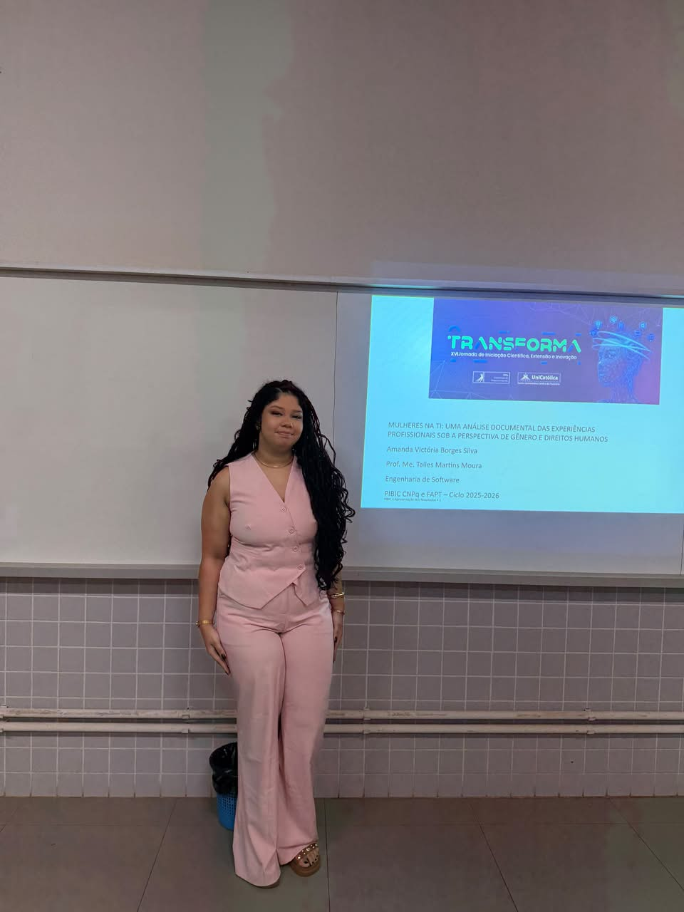
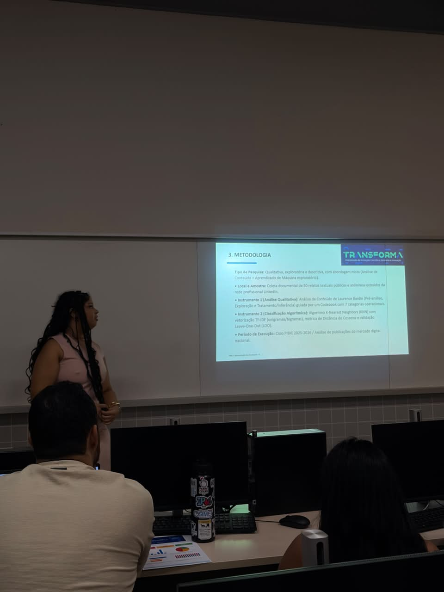
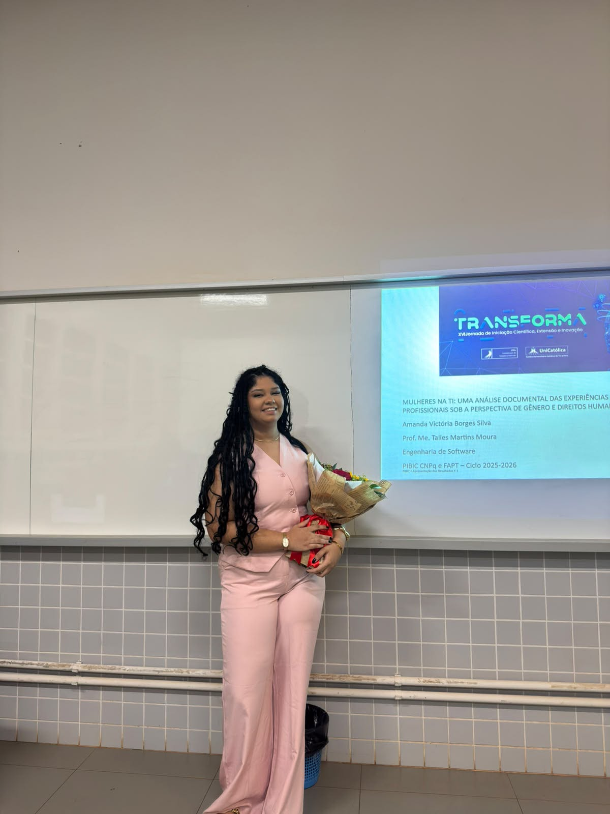

No dia 7 de outubro, foi realizada a apresentação da pesquisa “Mulheres na TI: uma análise documental das experiências profissionais sob a perspectiva de gênero e direitos humanos”, desenvolvida por Amanda Victória Borges Silva, sob orientação do professor Me. Talles Martins Moura, no curso de Engenharia de Software. O estudo faz parte do Programa Institucional de Bolsas de Iniciação Científica (PIBIC), com apoio do CNPq e da FAPT.

A pesquisa teve como objetivo analisar as experiências profissionais de mulheres no setor de Tecnologia da Informação (TI), buscando compreender os desafios relacionados à desigualdade de gênero e suas implicações para os direitos humanos, especialmente no que diz respeito à igualdade e à não discriminação.
Durante a apresentação, foram expostos os resultados da análise de 50 relatos públicos e anonimizados, publicados na plataforma LinkedIn. A investigação utilizou a metodologia de análise de conteúdo, associada a técnicas de aprendizado de máquina, para identificar e categorizar as experiências compartilhadas por mulheres que atuam no mercado tecnológico.

Entre os principais resultados, a pesquisa identificou que a categoria “Discriminação e Barreiras” foi a mais recorrente, correspondendo a 20% dos relatos analisados. Os registros evidenciaram desafios como o descrédito técnico, o machismo velado, o etarismo e outras barreiras que podem dificultar o desenvolvimento e a permanência das mulheres na profissão.
O estudo também destacou a importância da liderança feminina, das comunidades de apoio, da mentoria e das iniciativas de diversidade e inclusão para fortalecer a participação das mulheres no setor. Além disso, a pesquisa discutiu como as instituições de ensino e as empresas podem contribuir para a construção de ambientes mais respeitosos e igualitários.


Outro ponto abordado foi o uso de inteligência artificial para classificar os relatos. O modelo utilizado alcançou 46% de acurácia, resultado que demonstra as dificuldades de classificação automatizada de narrativas humanas cujos temas frequentemente se sobrepõem.
Ao final, a pesquisa ressaltou que a baixa representatividade feminina na TI não deve ser atribuída à falta de capacidade técnica, mas compreendida a partir de barreiras sociais, culturais e profissionais. Como possíveis medidas de enfrentamento, foram propostas iniciativas como processos seletivos mais justos, canais anônimos de denúncia, auditorias salariais e melhorias no ensino introdutório de programação.
A apresentação reforçou, assim, a importância da iniciação científica para ampliar o debate sobre gênero e tecnologia, dar visibilidade às experiências das profissionais e incentivar ações concretas em favor da igualdade de oportunidades. A continuidade do estudo prevê a ampliação da amostra para 200 relatos e o aprofundamento das análises com técnicas mais avançadas de processamento de linguagem natural.